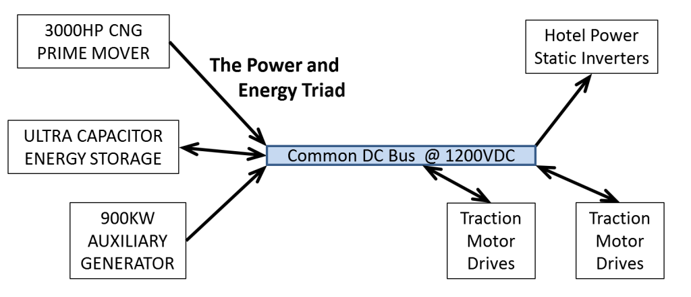

Reliability and Redundancy

- Common DC Bus system allows the failure of one of three power systems without losing ability to complete route
- Individual DC choppers for each of 8 DC traction motors allows isolating individual traction motor circuit in case of fault
- Ultra Capacitor Modules with integral contactor and diagnostics allow automatic isolation of faulty module